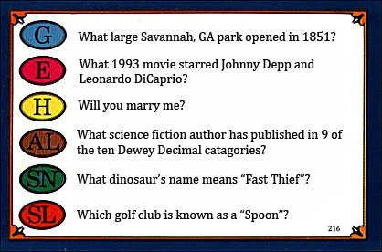

Tuesday, August 26, 2008
KYLE PROPOSED!
That's right...WE'RE ENGAGED! And the wedding and the bicycle trip honeymoon and everything else we've been casually planning and discussing here are officially happening. :-)
Kyle proposed on Saturday August 23rd (which happened to be a day after our 5.5 year anniversary). Everyone who hears the good news asks to see the ring and hear the proposal story, and since I'm such a fan of both I'm always willing to share. Here is the story of that weekend with random details, color photos, and only a bit of girly gushing.

On Friday Kyle and his best friend Dave came to Charlottesville for what promised to be an enjoyable weekend (even before the proposal happened). Dave never visits without his RockBand video game, and we jammed throughout the weekend with the help of my housemates. Kyle and I also had fun with Dave's car, a huge Charger named "Zeus." Dave admits that the gas-guzzling beast is more of a boat than a car, so Kyle and I decided that the full-sized boat bumper I found at a local antique warehouse would look perfect attached to its portbow.  Dave was quite amused when he discovered our "gift"; plus it protected Zeus from the dangers of my narrow street. I had no idea that Dave would soon assist with Kyle's much bigger surprise for me...
Dave was quite amused when he discovered our "gift"; plus it protected Zeus from the dangers of my narrow street. I had no idea that Dave would soon assist with Kyle's much bigger surprise for me...
On Saturday night the three of us went out to Sal’s Italian cafe for dinner. Suddenly Dave “got a call from work” and had to leave right away to access his laptop back at the house. Kyle maintains that Dave’s acting was terrible, but I completely fell for the story. I noticed that Kyle looked a bit off at that point, but he blamed his nerves on overprotective car ownership – Dave, who can’t really drive stick, was allegedly taking Kyle’s manual car back to the house. (Yup, I fell for that one too.)
Kyle and I used our unexpected alone time to take a walk through the downtown mall, and stopped by the ice rink to watch some decidedly mediocre hockey. Kyle eventually had to drag me away – mediocre or not, I love to watch sports – and we continued our walk in the direction of Court Square. We reached the park where unbeknownst to me Kyle planned to propose. I got distracted again though, this time by an impressive statue of Stonewall Jackson. It probably tortured Kyle when I stopped to take photos for my brother (he’s a big fan – long story) but we finally made it over to a bench. Underneath it were three Trivial Pursuit cards (planted by Dave a few minutes before)… which leads me to a necessary back story…
On the ultimate frisbee team’s trip to Georgia my freshman year Kyle and I took a number of walk&talks that really solidified our very new relationship. On one of them we happened upon a number of Trivial Pursuit cards scattered across the sidewalk. We couldn’t figure out how they got there, though my favorite theory was that an overly competitive kid had tossed the game out of a nearby house after losing. That night we interspersed our conversation with questions off of the cards and, being a romantic packrat, I kept one of them in my wallet to remember our evening walks through Tybee Island. Kyle had no idea that I still carry the card, by the way, he's just good at remembering random moments and inside jokes (a rare skill in the male population).
The cards underneath the bench Saturday night had suspiciously familiar questions and answers. For example, “What 1987 hit single was song of the year in the UK?” (Answer: Never Gonna Give You Up; Kyle and I always appreciate a good RickRoll); “What 80s band sometimes pretended to be a Christian Rock group called Dove?” (Devo, Kyle’s frisbee nickname); and “What dinosaur’s name means ‘Fast Thief’?” (the velociraptor, about which Kyle and I have something of an obsession). But the most important question was in the history category on the second card: “Will you marry me?” The answer spot on the flipside of the card was blank, but as Kyle got down on one knee and repeated the question I gave an enthusiastic and overwhelmed “yes.” He slipped an absolutely stunning ring on my finger and soon after Dave emerged from the nearby bushes (or from just around the corner) to congratulate us.
I can't fully describe how I felt that night, or how I still feel whenever I think about being engaged to Kyle. I honestly couldn’t ask for a better ring, proposal, or fiancé. I’m still grinning with disbelief at how lucky and happy I am, and I don't expect the euphoria to fade anytime soon.


Lighthearted Concerns
→


 | posted at: 08:42 |
permanent link and comments
| posted at: 08:42 |
permanent link and comments